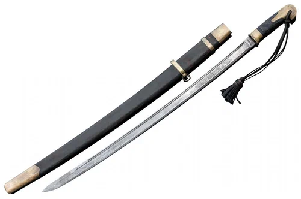
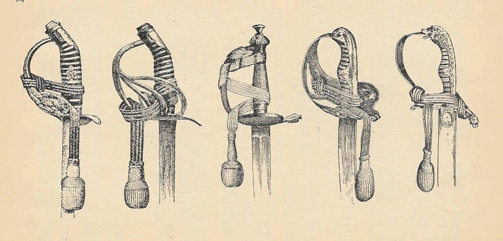

История темлячных бусин начинается не с декоративных миниатюр, а с самого темляка — простого и практичного элемента, который помогал удерживать оружие или инструмент и не потерять его в работе. Сами бусины появились значительно позже: сначала как дополнение к шнуру, а затем как самостоятельный объект, в котором соединились функция, образ и коллекционная ценность.
Сегодня темлячная бусина может восприниматься по-разному: как бусина на темляк, как бусина для ножа, как выразительная деталь темляка для ножа, как небольшая авторская миниатюра и как предмет коллекционирования. Чтобы лучше понять, почему это произошло, полезно посмотреть на весь путь развития — от утилитарного шнура до современных авторских моделей.
Если вы только входите в тему, сначала можно прочитать что такое темлячная бусина, а затем вернуться к истории её развития.
Откуда появился темляк и зачем он был нужен

Сам темляк появился значительно раньше, чем декоративные бусины. Его основная задача была сугубо практической: удержание оружия, инструмента или другого предмета в руке и снижение риска его уронить или потерять.
Темляки использовались на холодном оружии, походном и рабочем снаряжении, а позже и на различных повседневных предметах. Изначально это были простые шнуры или ремешки, где важнее всего были прочность, удобство и надёжность, а не декоративность.
Если говорить современным языком, то именно из такого простого шнура позже вырос темляк для ножа, а вместе с ним и вся культура аксессуаров, где бусина на темляк уже играет не только практическую, но и визуальную роль.
Когда на темляках появились декоративные элементы

Со временем чисто функциональные элементы начали дополняться деталями, которые не только помогали в использовании, но и придавали вещи характер. В разных традициях встречались узлы, подвески, бусины и другие небольшие элементы, которые могли нести одновременно практическую, символическую и декоративную роль.
Однако тогда бусины ещё не воспринимались как отдельное направление. Они были частью общего оформления темляка и не существовали как самостоятельный объект интереса.
Именно этот переходный этап важен для понимания истории: сначала декоративный элемент служит приложением к шнуру, а уже потом начинает жить собственной жизнью. По сути, это и был первый шаг к появлению бусин на темляк в современном смысле.
Как темлячные бусины стали отдельным направлением
Отдельное развитие темлячные бусины получили заметно позже — уже в контексте современной ножевой культуры, кастомных аксессуаров и интереса к индивидуальной сборке. Когда складные ножи, темляки и шнуры из паракорда стали частью повседневного увлечения, темляк перестал быть только утилитарной деталью и превратился в элемент индивидуальной настройки.
Вместе с этим начали появляться более продуманные и выразительные бусины. Они стали выполнять сразу несколько функций:
- улучшать хват и облегчать извлечение ножа;
- делать темляк для ножа более удобным и заметным;
- визуально завершать комплект;
- делать серийную вещь более индивидуальной;
- служить небольшим художественным акцентом.
В этот момент темлячная бусина перестала быть просто дополнением к шнуру и стала самостоятельной деталью, которую выбирают осознанно — как бусину для ножа, как бусину на темляк или как небольшую авторскую миниатюру.
Как менялись материалы и стилистика

По мере развития темы менялись и материалы. Если раньше важнее была сама функция темляка, то в современных бусинах большое значение получили вес, фактура, цвет, детализация и характер исполнения.
Сегодня для темлячных бусин используют разные подходы и материалы:
- металл — за прочность, вес, долговечность и красивое старение поверхности;
- металл с патиной или росписью — за более выразительный художественный образ;
- смолу — за лёгкость, яркость и высокую детализацию;
- комбинированные техники — когда важны сложная подача и необычная фактура.
Вместе с материалами менялась и стилистика. Если ранние решения были ближе к простым формам, то современные бусины часто выглядят как миниатюрные скульптуры, персонажи, маски, звериные образы, гротескные головы или самостоятельные арт-объекты.
Особенно заметно это на современных бусинах для ножа и на темляках из паракорда, где важны не только практичность, но и визуальный характер вещи.
Почему темлячные бусины стали популярной частью ножевой культуры
В современной ножевой культуре важна не только практичность вещи, но и то, как она выглядит, ощущается и отражает вкус владельца. Темлячная бусина хорошо вписалась в этот подход: она небольшая, заметная, функциональная и при этом даёт возможность персонализировать нож, темляк или комплект снаряжения.
Для одних это способ сделать нож удобнее в использовании. Для других — возможность добавить характер, настроение или отсылку к определённой эстетике. Поэтому популярность темлячных бусин росла не только как практичного аксессуара, но и как элемента индивидуального стиля.
Подробнее о современном смысле и функциях можно прочитать в статье что такое темлячная бусина. А если вам ближе практическая сторона, посмотрите и материал как сделать темляк для ножа.
Почему темлячные бусины стали предметом коллекционирования
Следующий важный этап развития — переход от просто красивого аксессуара к коллекционному объекту. Когда появились авторские модели, ограниченные серии и узнаваемые мастера, бусины стали ценить уже не только за удобство, но и за редкость, художественную идею, сложность исполнения и характер конкретной работы.
Так темлячные бусины начали восприниматься как миниатюрные объекты прикладного искусства. Их стали собирать по темам, по стилям, по материалам и по авторам.
Если вам интересна именно эта сторона темы, посмотрите отдельную статью о коллекционировании темлячных бусин.
Как исторические мотивы влияют на современные бусины
Даже современные авторские модели, которые выглядят очень далеко от старых темляков, всё равно продолжают эту историю. В них остаётся связь с практическим происхождением: темлячная бусина по-прежнему живёт на шнуре, взаимодействует с рукой и остаётся частью предмета, а не только отдельной миниатюрой.
Но одновременно в современных бусинах появились новые смыслы: авторский почерк, художественный образ, редкость, идея серии, коллекционная привлекательность. Поэтому сегодняшняя темлячная бусина — это уже не просто дополнение к ножу, а вещь на стыке функции, дизайна и личного вкуса.
Что делать дальше
Если этот материал уже разобран, дальше лучше перейти к ближайшим связанным темам — без длинного списка и лишних повторов.
Итог
История темлячных бусин — это история постепенного перехода от чисто утилитарного элемента к самостоятельному направлению, в котором сочетаются практичность, визуальный образ, авторская работа и коллекционная ценность.
Сегодня бусина на темляк или бусина для ножа — это уже не просто мелкая деталь, а способ придать вещи характер, удобство и индивидуальность. Если после исторического обзора вам хочется посмотреть, как эта тема выглядит сегодня, загляните в каталог авторских темлячных бусин. А если интереснее именно редкость, серии и ценность моделей, переходите к материалу о коллекционировании темлячных бусин.
FAQ
Когда появились темлячные бусины?
Как самостоятельное направление темлячные бусины оформились сравнительно недавно — уже вместе с развитием современной ножевой культуры, кастомных аксессуаров и темляков для ножа. Но их предпосылки появились раньше, когда темляки начали дополнять декоративными элементами.
Изначально темлячные бусины были декоративными?
Нет. Изначально сам темляк был полностью утилитарным элементом. Декоративность пришла позже, а отдельной художественной и коллекционной категорией бусины стали ещё позднее.
Почему темлячные бусины стали популярны?
Из-за удачного сочетания функции и образа. Они помогают улучшить хват, сделать темляк для ножа удобнее, персонализировать нож или комплект, а авторские модели дополнительно привлекают коллекционеров и любителей миниатюр.
Связаны ли современные темлячные бусины с паракордом?
Да, во многих случаях связаны. Современные бусины часто используют на темляках из паракорда, где важны и удобство хвата, и внешний вид, и совместимость по размеру с конкретным шнуром.